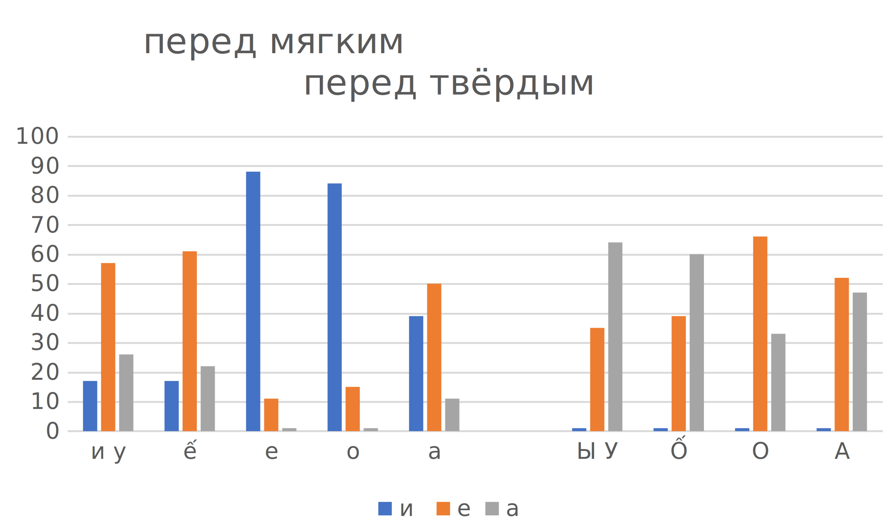

Церковное (Говор 52)
Безударный вокализм после твердых согласных – полное оканье: гласные на месте этимологических *о и *а различаются во всех безударных слогах:
- Разогреешь, посолишь немножко
- И вот там человек один лошадь обгоняет, топчет
- Он холодный!
- И вот работаем, а тебя заставляют – пиши!
- По две коровы кормили, а кто хорошо…
- Всех леший унёс, поразнёс…
Ритмическая структура слова без противопоставления 1-го предударного слога остальным безударным слогам (см. Рисунок 1).
Безударный вокализм после мягких согласных – частичное различение гласных на месте этимологических гласных неверхнего подъема *ѣ, *а и *е, ь (см. Таблица 1).
Перед твердыми согласными в 1-м предударном слоге
- на месте *ѣ произносится [е]:
Куды, думаю, все люди девалися?
А в Андронихи двенадцать домов было, деревня была
- на месте *а произносится [е]:
Лягух нету, нет, нету
Вязать я вяжу, так вязала
– Чтобы лучше писать водили? – Плясать! – А, плясать. – Но. Плясать
- на месте *е, ь произносится [о] (реже [е]):
Александрой зовут-то ей
Уехала там к сестры
Одна свекрова, другая мать
Она там лежит
Перед мягкими согласными в 1-м предударном слоге
- на месте *ѣ произносится [и]:
Сейчас в реки-то рыбы-то нету
А раньше чего, в реки и рыбы-то много
Это нацедят молока-то
И от рака-то умерла, двое детей оставила
- на месте **а* произносится [е]:
А потом говорят: «Что за беда, что за снарядиха?»
Кастрюлю на плитку, его перекипячу… Срядилася дак
- на месте **е, ь* произносится [е]:
Запекёшь такие
Там пахали дак ручеёк экой маленькой
А в Андронихи двенадцать домов было, деревня была
Дак теперь уж-то мне восьмидесятый год, дак леший знает!
Пойду перекрестясь
| примеры | перед С | перед С’ | примеры | |
|---|---|---|---|---|
| девалися, двенадцать | [е] | *ѣ | [и] | реки, нацедят, детей |
| лягух, плясать, вязать, вяжу, вязала | [е] | *а | [е] | снарядиха, перекипячу, срядилася |
| Александрой, сестры, свекрова, лежит | [о] | *е, ь | [е] | запекёшь, деревня, ручеёк, теперь |
Широко представлено заударное ёканье (произношение [о] на месте этимологических *е, ь), особенно последовательно — в окончаниях глаголов:
Там много, она вяжет
И вот там человек один лошадь обгоняет, топчет
Дак теперь уж-то мне восьмидесятый год, дак леший знает!
См. Описание говора.
Тамбовский (Говор 13)
Верхнеспасское
Говор с. Верхнеспасское был обследован по программе ДАРЯ сотрудниками Института русского языка АН СССР в 1965 г. Согласно этим данным, предударный вокализм после твёрдых согласных в нём – недиссимилятивное аканье, а после мягких – ассимилятивно-диссимилятивное яканье новосёлковского типа ([и] в первом предударном слоге произносится перед ударными /е/ и [’о], [а] – перед остальными гласными (Аванесов, Бромлей 1986: карты 3, 8)).
Результаты инструментального анализа современных записей (360 примеров, информанты МГЛ1934 и ДГЛ1919), позволяют утверждать, что в позиции после твёрдых согласных наблюдается диссимилятивная зависимость предударных гласных от ударных по длительности (см. Таблица 2): чем дольше ударный гласный, тем короче предударный (см. (Князев, Шаульский 2007)).
| П/у гласный | Дл-ть п/у гласного | Уд. гласный | Дл-ть уд. гласного | Дл-ть п/у гласного в % от дл-ти ударного |
|---|---|---|---|---|
| а | 99 | и ы у | 134 | 79 |
| а | 96 | ô ê | 141 | 73 |
| а, ъ | 94 | о ’о е | 141 | 70 |
| а, ъ | 93 | а | 148 | 67 |
Аудитивный анализ показывает, что перед ударными гласными [а], а также [е] и [о], не восходящими к ѣ и ω, наряду с [а] возможен предударный [ъ], в других позициях – только [а]. По-видимому, система аканья верхнеспасского говора в прошлом предполагала диссимилятивную зависимость предударных гласных от ударных.
В безударных слогах непервого предударного слога после твёрдых согласных [ъ]:
Во как попал-то
Пойдём за книжкой
Жена не говори мужу ничё
Их забрали на войну
Ты что думаешь, шут на омёт подать навильник?
Какой клочок купишь или там что-нибудь
Сейчас поросят берут, быков кормят, ну а тоды-то не было, если есть одна корова – всё вот
Сестра тогда по вербовке уехала – мне ровесница
Молоком горячим
А я говорю: «Я неграмотная!»
Зина-то – это ещё ходила, она на бухгалтера выучилась
Две лощины или три до табора-то
В некоторых случаях в заударных слогах выступает а-образный звук, к таковым относятся позиции перед [й] в
- окончании И.п. м.р. прилагательных,
- окончании Тв.п. существительных 1 скл.:
Там Егорка родной
Пойдём за книжкой
Встречаются примеры редукции до нуля и почти до нуля в заударных и втором предударном слогах.
Трое ребятишечек было
Да, я тоже тутошная
Хорошо, что ли
С другой стороны, в позиции после шумных согласных перед плавными возможен вставной гласный [ъ]:
И мы не пухли
На дню три раза
В начальном неприкрытом втором предударном слоге встречается звук [и]:
Дети, вот только один зять озорной это, деревенский-то
Данные перцептивного анализа безударного вокализма после мягких согласных (460 примеров, информанты МГЛ1934 и ДГЛ1919; Таблица 3, Таблица 4, Рисунок 2) свидетельствуют о том, что в нём наблюдается очень сложная картина: совмещение
- диссимилятивного принципа (более долгий предударный гласный перед ударными верхнего и (этимологически) верхне-среднего подъёма) с
- ассимилятивным (более «полный» гласный перед ударным [а]) и с
- принципом умеренного вокализма (более передний предударный перед мягким согласным, чем перед твёрдым).
Таблица 3: Яканье в говоре Верхнеспасского (индекс обозначает количество соответствующих примеров в процентах от общего числа)
| 1 п/у | под у. | под у. | под у. |
|---|---|---|---|
| А64 е36 | ы | у | |
| А60 е40 | ô | ||
| а33 Е67 | о | ||
| А48 Е52 | а |
| под у. | под у. | под у. | 1 п/у |
|---|---|---|---|
| ’и | ’у | а26 Е57 и17 | |
| ’ê | а22 Е61 и17 | ||
| ’е | е11 И89 | ||
| ’o | е15 И85 | ||
| ’а | а11 Е50 и39 |
Таблица 4: Яканье в починковских говорах (индекс обозначает количество соответствующих примеров в процентах от общего числа)
| 1 п/у | под у. | под у. | под у. |
|---|---|---|---|
| А100 | ы | у | |
| А100 | ô | ||
| А100 | о | ||
| И88 ь12 | а |
| под у. | под у. | под у. | 1 п/у |
|---|---|---|---|
| ’и | ’у | А84 е16 | |
| ’ê | А57 Е43 | ||
| ’е | А54 Е46 | ||
| ’o | А75 е25 | ||
| ’а | И100 |

Примеры:
- перед ударными гласными верхнего и (этимологически) верхне-среднего подъёма (сначала перед твёрдыми согласными, затем перед мягкими):
И ребятишки у нас, чтоб вон от одной матери есть – дерутся, туды= у нас – никогда
И на пятерых дадут нам одну книжку
Вот Бездушный там у нас был
Эти корешки-то – суп варили
Все под запертой живут-то
Там Егорка родной
А мы с сестрой с двадцать девятого, а я с тридцать четвёртого, что там мне было
Мы масло продавали пахтали, на зерно, на крупу
Разуваемся, переходим
Тут ребёночек у нас появился
И ребятишки у нас, чтоб вон от одной матери есть – дерутся, туды= у нас – никогда
Трое ребятишечек было
Не призведи лихому татарину такую жизнь, какую мы переживали
Мы тоже не ели
Доманька велела, тут у ней где-то четвёрка вина, велела отдать
Да ты велела Барбину её отдать
И через плечо, вот как
- перед ударными среднего подъёма:
А сумки шили из мешочков вот
Каждый день ходили на табор пешком взад-вперёд
Верхом сядут, да за нами
А я у дочери, тут, в деревне, живу зиму-ту
Дети, вот только один зять озорной это, деревенский-то
Разведём…
Тут ребёночек у нас появился
А мы с сестрой с двадцать девятого, а я с тридцать четвёртого, что там мне было
Каждый день ходили на табор пешком взад-вперёд
Доманька велела, тут у ней где-то четвёрка вина, велела отдать
- перед ударным нижнего подъёма:
Война началась, я уж расскажу
И убегает
А я говорю: «Я неграмотная!»
Бывало, накосим с ней по вязаночке
Мы попадаем в дверях
И меняла всё
А мы с сестрой с двадцать девятого, а я с тридцать четвёртого, что там мне было
В безударных слогах непервого предударного слога после мягких согласных фонемы неверхнего подъёма совпадают в звуке [ь]:
И ребятишков сколько много было
И не дай бог никому такую жизнь, какую мы пережили
Дети, вот только один зять озорной это, деревенский-то
Ритмическая структура предполагает противопоставление 1-го предударного слога остальным безударным слогам, в частности, 2-му предударному, по длительности и интенсивности (см. Рисунок 3), однако эта двухступенчатость выражена слабее, чем, например, в южнорусских говорах с диссимилятивными типами вокализма, см. (Высотский 1973: 37).


См. Описание говора.